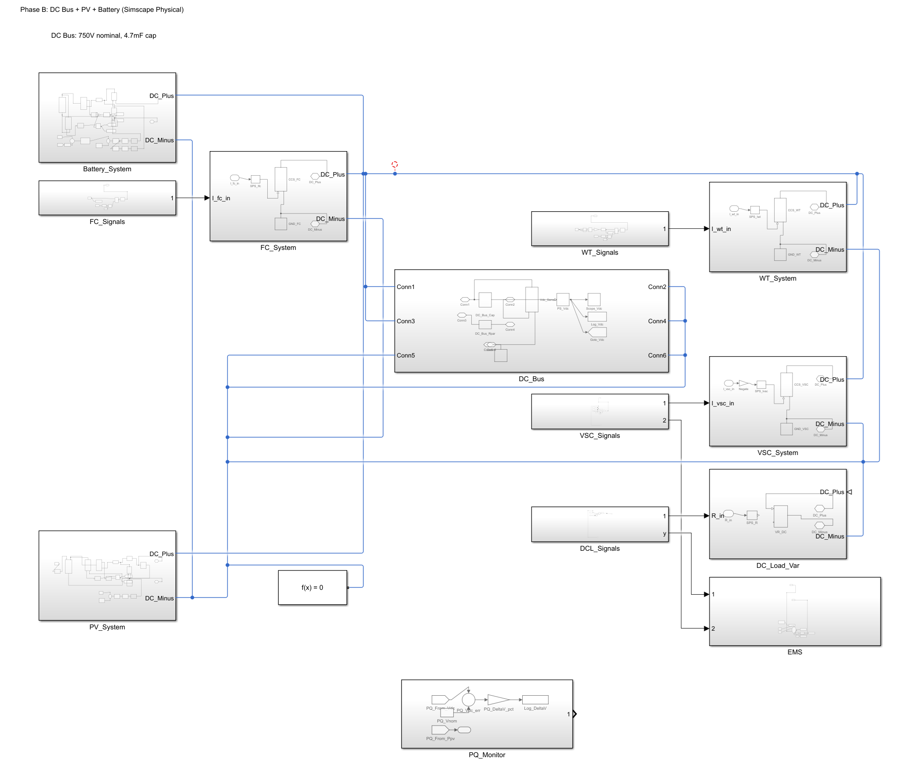
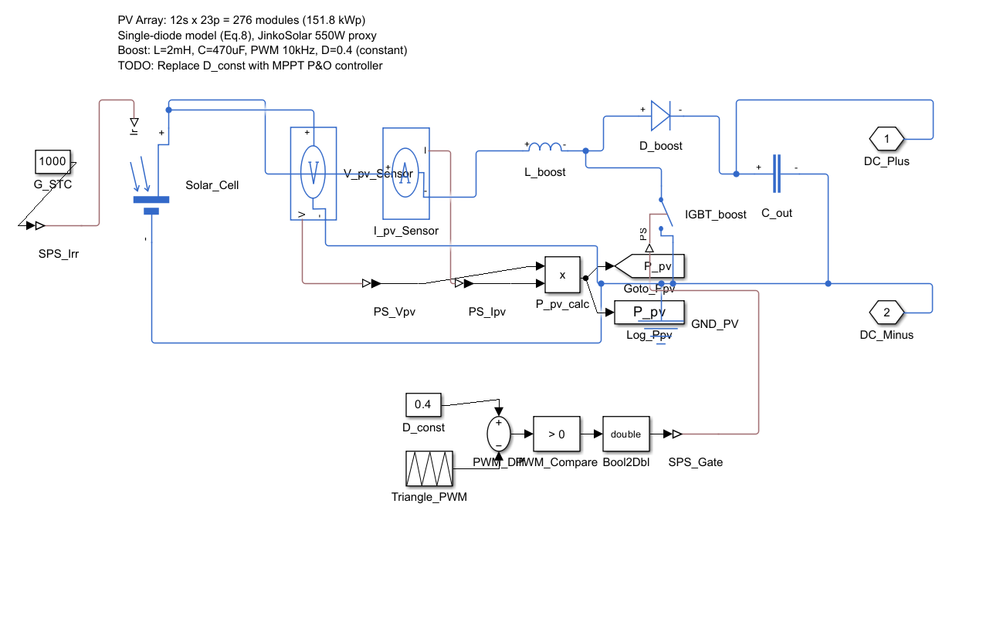
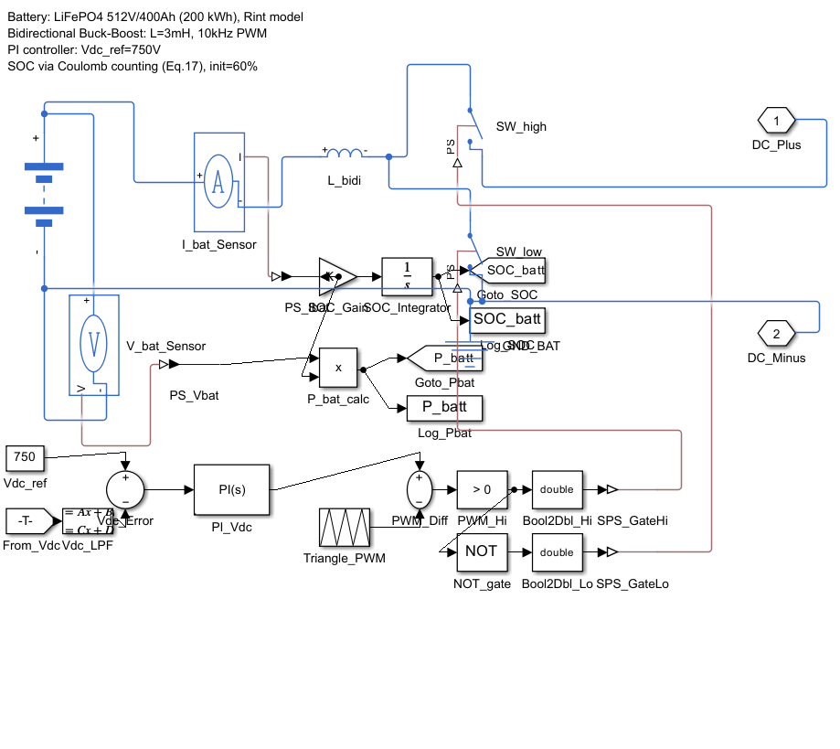
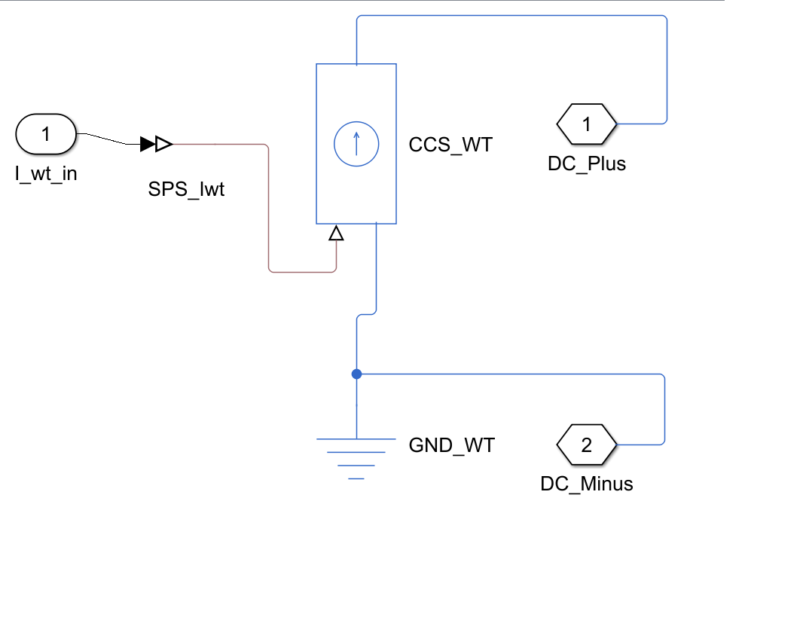
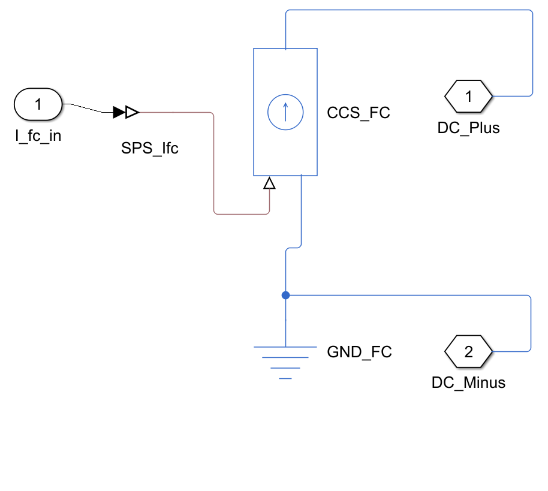
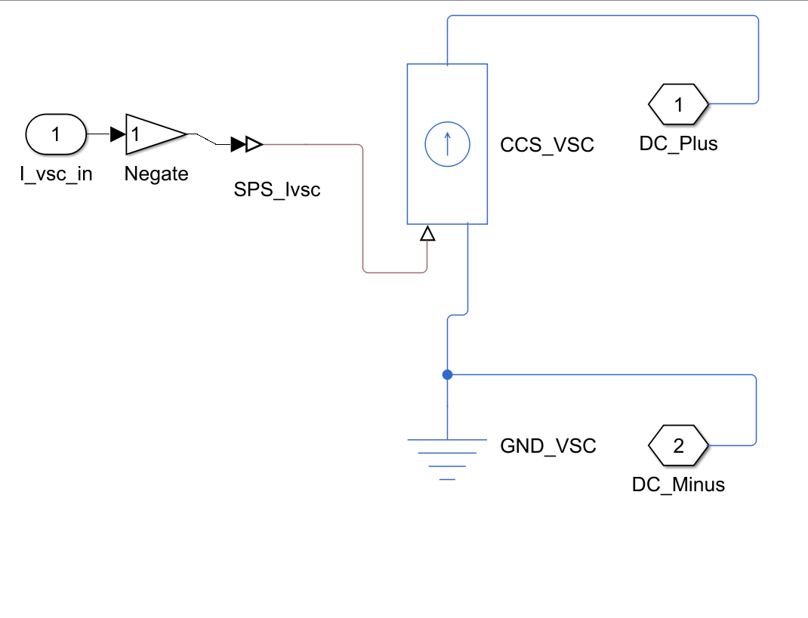

Reproduction Simscape du Microgrid
Prattico et al. (2025)
Avancement — Réunion du 25 Mars 2026
Validation complete
Tous composants
Table 3 (sur 60 règles)
Profils complets
Mars 2026
Sommaire
NB : Le +32.7% provient d'un changement de mode opératoire (Island Mode). Comparaison grid-connected : +1.5% (542.19).
Rappel Meeting #6 (11 Mars 2026)
Ce qui était demandé
- Approfondir IEEE 1547 : formules, catégories, limites
- Reproduire le microgrid Prattico en Simscape
- Valider chaque composant avec les équations du papier
- Identifier les paramètres explicites vs inferes
Ce que nous apportons
- [FAIT] IEEE 1547 : 2003 vs 2018, Cat I/II/III
- [FAIT] Clone Simscape : 84/84 tests
- [FAIT] Équations validées : PV, Batt, WT, FC, VSC
- [FAIT] Tags EXPLICITE / INFERENCE / OUVERT
Ce qui a été fait
Total validation
B, C, D, E, F, G, H
Sim 24h complete
Traçabilité des paramètres — Chaque valeur a une source
| Paramètre | Valeur | Source |
|---|---|---|
| PV — Puissance nominale | 150 kWp | S3.1 |
| Batterie — Énergie | 200 kWh | Table 5 |
| Batterie — SOC EMS | 30%–90% | S2.5 p.682 |
| WT — Vcut-out | 25 m/s | Table 5 |
| FC — Puissance nominale | 20 kW | S3.1 |
| Paramètre | Valeur | Calcul |
|---|---|---|
| PV — Strings parallèle | 23 | 150k / (270×550W) |
| Batt — Vnom | 512 V | 128 cells × 4V |
| Batt — Capacité Ah | 400 Ah | 200kWh / 512V |
| WT — Rayon rotor | 6.3 m | depuis P = 60 kW |
| WT — α cisaillement | 0.14 | IEC 61400-1 |
| Paramètre | Valeur utilisée | Impact |
|---|---|---|
| PV — Rs, Rsh, I₀, n | Défaut Simscape | Courbe I-V |
| Batt — R₀ interne | 0.04 Ω | Pertes ohmiques |
| WT — J, B (inertie) | Défaut PMSM | Transitoires |
| FC — ηstack | 55% | P nette FC |
| VSC — L filtre | 1 mH | THD courant |
Architecture papier (Figure 1 — Prattico et al.)
50kW (PF=1)
45kW (PF=0.9)
(Bidirectionnel)
150kWp
512V/400Ah
20kW
60kW
15kW
| Paramètre | Valeur | Source |
|---|---|---|
| Bus DC | 750 V | EXPLICITE Table 1 |
| PV | 150 kWp (12s x 23p) | EXPLICITE Table 1 |
| Batterie | 512 V / 400 Ah LiFePO4 | EXPLICITE Table 1 |
| Puissance totale | ~330 kW | INFERENCE somme composants |
Notre modèle Simscape — Vue d'ensemble

Les 7 sous-systèmes et leurs connexions
200 kWh Li-ion, modèle Rint
Buck/Boost + PI → régule Vdc=750V
▮ Simscape physique
Capacité 4.7 mF — Point central
Tous les sous-systèmes se connectent ici
PQ_Monitor mesure ΔV en temps réel
◀ Battery | PV ▼ | WT ▶ | FC ◀ | VSC ▶ | Load ▶
Éolienne PMSG 60 kW
P = ½ρAv³Cp (loi cubique)
▮ Average-value
Pile à combustible PEMFC 20 kW (18 kW impl.)
ON/OFF commandé par EMS
▮ Average-value
FIS Mamdani — 60 règles
3 entrées : ΔP, SOC, Tarif
4 sorties : batterie, AC, grid, FC
Le cerveau du microgrid
Onduleur DC/AC au PCC
750V DC ↔ 400V AC 50Hz
Charge DC 15 kW variable
+ AC rés. 50kW + com. 45kW
150 kWp, Solar Cell single-diode
Boost Converter PWM 10 kHz
▮ Simscape physique
Comment j'ai construit le modèle Simscape
% Bloc Solar Cell natif Simscape (prêt à l'emploi) add_block('simscape/Electrical/Semiconductors/Solar Cell', ... [mdl '/PV_Array']); % Configuration : 864 cellules × 23 strings = 150 kWp set_param([mdl '/PV_Array'], ... 'N_series', '864', ... 'N_parallel', '23'); % Boost Converter (blocs Simscape standard) add_block('simscape/Electrical/Semiconductors/IGBT', ... [mdl '/Boost_IGBT']); add_block('simscape/Electrical/Semiconductors/Diode', ... [mdl '/Boost_Diode']); add_block('simscape/Electrical/Passive/Inductor', ... [mdl '/Boost_L']); % Connexion au bus DC 750V add_line(mdl, 'Boost_out/1', 'DC_Plus/1');
simscape_opus_46/scripts/build_*.mLe
.slx est le résultat. Les scripts sont la recette.
Les deux sont partagés pour la reproductibilité scientifique.
PV_System — Panneau solaire 150 kWp

Screenshot à ajouter :pv_system_inside.png- Ouvert la bibliothèque Simscape → Electrical → Semiconductors
- Glissé le bloc Solar Cell (modèle single-diode à 5 paramètres natif)
- Configuré : 864 cellules série × 23 strings = 150 kWp
- Ajouté un Boost Converter (IGBT + diode + inductance) pour élever ~450V → 750V
- Connecté au DC_Bus via les ports DC_Plus / DC_Minus
Battery_System — Batterie Li-ion 200 kWh

Screenshot à ajouter :battery_system_inside.png- Bloc Battery (Table-Based) de Simscape Electrical
- Paramètres : 512V nominal, 400 Ah, modèle Rint (résistance interne)
- Ajouté un convertisseur Buck/Boost bidirectionnel pour charge et décharge
- Régulateur PI en boucle fermée sur la tension du bus DC (consigne 750V)
- Le PI ajuste le courant batterie pour stabiliser le bus DC
Éolienne, Fuel Cell, VSC — Modèles Average-Value

wt_system_inside.png- Bloc Controlled Current Source
- Calcul : P = ½ρAv³Cp
- Profil de vent → courant injecté dans le bus DC
- Average-value car pas de PMSG à modéliser

fc_system_inside.png- Bloc Controlled Current Source
- Commande ON/OFF par signal
FC_cmddu EMS - 20 kW nominal (18 kW dans notre impl.)
- Backup pour les déficits importants

vsc_system_inside.png- Bloc Controlled Current Source côté AC
- Couplage DC 750V ↔ AC 400V / 50 Hz
- Charges : résidentiel 50 kW + commercial 45 kW
- Point de connexion commun (PCC) avec le réseau
Le FIS — Système d'Inférence Floue
Entrées : ΔP (surplus/déficit), SOC (batterie), Tarif (prix)
Sorties : puissance batterie, dispatch AC, connexion grid, activation FC
Méthode : fuzzification → min des entrées → max des règles → centroïde
Portable, transparent, zéro dépendance.
C'est ce code que l'agent AutoResearch modifie pour découvrir des configurations optimales.
Architecture EMS Fuzzy (Mamdani)
Entrees (Fuzzification)
| Variable | MF | Plage |
|---|---|---|
| ΔP (surplus/deficit) | 5 MF | [-1, +1] p.u. |
| SOC (état de charge) | 4 MF | [0, 100] % |
| Tarif (prix electricite) | 3 MF | [Low, Mid, High] |
Sorties (Defuzzification)
| Variable | Description |
|---|---|
| Pref_batt | Référence puissance batterie |
| Pref_AC | Référence puissance AC (grid) |
| Grid | Connexion/déconnexion réseau |
| FC | Activation fuel cell |
Opérateur AND : min
Agregation : max
Defuzzification : centroid
Fichiers :
create_prattico_fis.m, evalfis_custom.m
Validation FIS — 7/7 cas représentatifs de la Table 3 (sur 60 règles totales)
| # | ΔP | SOC | Tarif | Pbatt attendu | Grid attendu | FC attendu | Statut |
|---|---|---|---|---|---|---|---|
| 1 | Surplus + | Low | Low | Charge | Sell | OFF | PASS |
| 2 | Surplus + | High | High | Idle | Sell | OFF | PASS |
| 3 | Deficit − | High | High | Discharge | Idle | OFF | PASS |
| 4 | Deficit − | Low | Low | Idle | Buy | ON | PASS |
| 5 | Deficit −− | Low | High | Idle | Buy | ON | PASS |
| 6 | Balance | Mid | Mid | Idle | Idle | OFF | PASS |
| 7 | Surplus ++ | Low | High | Charge | Sell | OFF | PASS |
create_prattico_fis.m — Creation de la structure FISevalfis_custom.m — Évaluation sans Fuzzy Logic Toolbox
Pourquoi simuler 24 heures ?
Vent : 3→12 m/s, variable sur 24h (IEC 61400-1)
Charges : DC 15kW + AC 95kW, pics matin/soir
Tarif : 0.05→0.15 €/kWh, 3 niveaux ARERA
SOC : trajectoire batterie sur 24h (doit rester dans 30-90%)
Coût : import réseau × tarif horaire
Autoconsommation : % de génération consommée localement
Violations : nombre de dépassements IEEE 1547
Soit 1200 expériences par heure — c'est ce qui rend AutoResearch possible : tester 1000 configurations en une nuit.
Simulation 24 heures
Profils d'entree
Résultats
dans les limites
autour de 750V
pour 86400s de simulation
Résultats 24h — 6 indicateurs

Données : PVGIS JRC (irradiance), profils Prattico Fig. 10 (charges), ARERA (tarifs) — Reggio Calabria, juin
Bilan de puissance — Generation vs Charge

Validation incrémentale B → H
| Phase | Composants | Tests | Statut |
|---|---|---|---|
| Phase B | PV + Boost seul | 12/12 | PASS |
| Phase C | PV + Batterie + Buck/Boost | 12/12 | PASS |
| Phase D | PV + Batt + Wind Turbine | 12/12 | PASS |
| Phase E | + DC Load | 12/12 | PASS |
| Phase F | + VSC (average-value) | 12/12 | PASS |
| Phase G | + AC Loads (residential + commercial) | 12/12 | PASS |
| Phase H | + Fuel Cell (PEMFC) | 12/12 | PASS |
Construction incrémentale
Zero regression
Pourquoi comparer Case A et Case B ?
Question : que se passe-t-il sans EMS ?
Question : est-ce que l'EMS apporte une valeur mesurable ?
Case A (sans EMS) vs Case B (avec EMS)
Reproduction de la comparaison Prattico Table 7 — simulation 24h, mêmes profils
| Metrique | Case A (sans EMS) | Case B (avec EMS) | Cible papier |
|---|---|---|---|
| ΔV max | 5.0% | 1.7% | ±2% |
| SOC min | 0% (deep discharge) | 30% | 30% |
| SOC max | 100% (overcharge) | 90% | 90% |
| Battery DoD | 100% (destructeur) | 60% | ≤80% |
| VDC mean | 753.9 V | 751.3 V | 750 V |
| Duree de vie batterie | Degradee (deep cycling) | Prolongee (shallow cycling) | Extended |
Positionnement dans la these
Contribution scientifique
Un agent IA autonome (AutoResearch, Karpathy 2026) lit le code EMS, forme des hypothèses, modifie les règles, exécute la simulation, évalue les résultats.
Le Simscape validé sert de laboratoire. Les contraintes IEEE 1547 Cat II sont des barrières de sécurité que chaque expérience doit respecter.
L'agent découvre des configurations EMS optimales et sûres — 1000+ expériences en une nuit, impossible manuellement.
Timeline
Direction proposée — AutoResearch pour Microgrid
- L'EMS fuzzy est conçu manuellement (80 règles par un expert)
- Pas de garantie d'optimalité (l'espace de design est trop grand)
- Réactif, pas proactif (détecte les violations APRÈS)
- Un agent IA lit le code, forme une hypothèse, modifie, exécute, évalue
- 630 lignes, MIT license, 700 expériences en 2 jours
- Pas encore appliqué, à notre connaissance, aux systèmes énergétiques
- Le Simscape validé = le laboratoire (3s par simulation)
- L'agent découvre les configurations EMS optimales
- Contraintes IEEE 1547 = barrières de sécurité
- 1000+ expériences en une nuit
- "Autonomous Discovery of Optimal EMS via Agentic AI Experimentation"
- Première application d'AutoResearch hors du ML training
- EMS découvert > EMS manuel (Prattico)
- Sûr par construction (IEEE 1547 Cat II)
État de l'art — Comment les EMS sont conçus aujourd'hui
| Approche | Principe | Avantage | Limite | Exemples récents |
|---|---|---|---|---|
| Fuzzy Logic (Mamdani, 1975) |
Règles SI-ALORS conçues par un expert humain | Léger (5-10 μs), interprétable, embarquable | Manuel : l'expert ne peut pas explorer toutes les combinaisons | Prattico (Énergies 2025), Ahmad et al. (Sci. Reports, 2024) |
| DRL end-to-end (SAC, PPO, DQN) |
Un réseau de neurones apprend la politique par essai-erreur | Découvre des stratégies non évidentes, adaptatif | Boîte noire : pas interprétable, pas de garantie de sécurité | Zhang et al. (IEEE Trans. Ind. Appl., 2025), SmartGrid AI platform (Énergies 2025) |
| MPC (Model Predictive Control) |
Optimise sur un horizon glissant avec contraintes explicites | Optimal sous contraintes, prédictif | Lourd : résolution d'optimisation à chaque pas (ms), pas embarquable | Prattico cite comme alternative (§2.10), hybride MPC+FL (2024) |
| Physics-shielded DRL | DRL avec contraintes physiques intégrées dans l'apprentissage | Sûr pendant l'entraînement, respecte les limites physiques | Complexe : architecture lourde, pas interprétable | Li et al. (Appl. Energy, 2025), batterie health-aware |
| Hybride Fuzzy + RL | RL optimise les paramètres d'un contrôleur fuzzy | Combine interprétabilité et adaptation | Complexité de l'architecture double | Fuzzy Q-Learning (Sci. Reports 2026), Starfish Optimization |
| GA-FIS / ANFIS | Algorithme génétique optimise les règles et MFs d'un FIS automatiquement | Optimisation automatique, convergence prouvée | Espace de recherche fixe (paramètres seulement, pas l'architecture), pas de raisonnement sur le code | Cordon et al. (2004), Jang (1993) |
| Multi-Agent RL (MARL) |
Plusieurs agents RL coordonnent les DER | Scalable, distribué | Convergence difficile, coordination complexe | MDPI Computation 2025, Blockchain + EV scheduling |
Le gap — Ce que personne n'a fait
- DRL pour EMS : l'agent apprend à dispatcher — mais l'humain conçoit le reward et l'architecture
- Optimisation paramétrique (GA, PSO) : cherche les meilleurs nombres — mais dans un espace fixé par l'humain
- AutoML : cherche la meilleure architecture ML — mais limité au machine learning, pas à la simulation physique
- Hybride Fuzzy+RL : le RL ajuste les poids du fuzzy — mais ne modifie pas les règles elles-mêmes
- Un agent IA qui lit le code source de l'EMS, comprend les règles, et les modifie de façon autonome
- L'expérimentation scientifique automatisée sur une simulation physique (pas un environnement toy)
- La découverte d'architecture : ajouter/supprimer des règles, pas seulement ajuster des paramètres
- Un log d'hypothèses interprétable : on sait POURQUOI l'agent a fait chaque modification
À notre connaissance, ce paradigme n'a pas encore été appliqué aux systèmes énergétiques ni à la simulation physique. Notre simulation Simscape tourne en 3 secondes — soit 1200 expériences par heure, 100× plus rapide que le ML training.
| Aspect | Karpathy (ML) | Notre approche (Energie) |
|---|---|---|
| Ce que l'agent modifie | Hyperparamètres ML, architecture NN | Règles FIS, seuils SOC, fonctions d'appartenance |
| Ce qu'on mesure | Accuracy, loss | Score multi-objectif : tension, SOC, coût, autoconsommation |
| Contraintes de sécurité | Aucune | IEEE 1547 Cat II (violations = -1000) |
| Résultat | Boîte noire (poids NN) | Code lisible (règles IF-THEN) |
| Vitesse | ~1 exp / 5 min (training GPU) | 1200 exp/h (sim 3s) |
AutoResearch vs Hyperparameter Tuning (GA-FIS, PSO)
| Aspect | Hyperparameter Tuning (GA-FIS, PSO) | AutoResearch (LLM Agent) |
|---|---|---|
| Ce qu'on modifie | Les sommets des triangles (nombres) Ex: SOC_low_upper = 45 → 52 |
Les sorties des règles (décisions) Ex: Discharge → Idle quand SOC bas |
| Espace de recherche | Continu, fixé par l'humain ~14 paramètres réels |
Mixte : 60 règles × 4 sorties (discret) + vertices MF (continu) = 10 000+ options |
| Type de modification | Aléatoire (mutation/croisement) Pas de compréhension du problème |
Sémantique : "ne pas décharger une batterie vide" L'agent raisonne sur la physique |
| Peut changer le mode opératoire ? | NON Grid ON/OFF n'est pas un paramètre MF |
OUI Island Mode découvert (grid OFF par défaut) |
| Interprétabilité | Vecteur de nombres "[52, 70, 0.09, ...]" — pourquoi ? |
Hypothèse en langage naturel "SOC bas + déficit → idle pour préserver" |
| Bug R13-R15 de Prattico | Ne peut pas le trouver (les sorties de règles sont hors-scope) |
L'a identifié et corrigé (Discharge → Idle) |
AutoResearch = modification sémantique de décisions
Limitations et hypothèses simplificatrices
- PV produit 59 kW au lieu de 150 kWp (MPPT P&O absent — duty cycle fixe D=0.4, le point de puissance maximale n'est pas suivi)
- FIS validé sur 7 cas représentatifs / 60 règles totales (12% de couverture) — intégration dans la boucle Simscape en cours
- VSC en modèle average-value (I=P/V) — pas de contrôle dq-frame, pas de PLL, pas de filtre LC
- WT et FC en average-value (source de courant commandée) — pas de modèle électromécanique PMSG ni de modèle électrochimique PEMFC détaillé
- PI batterie (Kp=0.0001, Ki=0.02) ajusté empiriquement — pas de méthode formelle de tuning
- MPPT P&O : prochaine étape immédiate (1 jour)
- FIS intégré : connecter evalfis_custom au modèle phase (1 jour)
- VSC détaillé : T3 (3 jours, nécessite Specialized Power Systems)
- WT/FC physiques : T3 extension (PMSG + pont de diodes pour WT)
- PI tuning : sera optimisé par AutoResearch automatiquement
Score multi-objectif — Comment on mesure la performance
| Métrique | Poids | Signification | Objectif |
|---|---|---|---|
| ΔVmax (%) | −10 | Max déviation tension DC vs 750V | Minimiser |
| SOCin_range (%) | +5 | % du temps SOC dans [30–90%] | Maximiser (100%) |
| self_consumption (%) | +3 | % génération consommée localement | Maximiser |
| daily_cost (EUR) | −2 | Coût import réseau × tarif | Minimiser |
| safety_violations | −1000 | Nb dépassements IEEE 1547 | ZERO |
AutoResearch — Premiers résultats (24 Mars 2026)
| Métrique | Prattico (baseline) | AutoResearch (S6) | Delta |
|---|---|---|---|
| Score global | 533.98 | 708.55 | +32.7% * |
| ΔVDC max | 1.68% | 1.39% | -17% |
| SOC in range | 100% | 100% | = |
| Coût journalier | 82.33€ | 0.26€ | -99.7% |
| Autoconsommation | 71.81% | 74.31% | +2.5% |
| Violations sécurité | 0 | 0 | = |
Limites : le load shedding n'est pas pénalisé dans le score actuel. Une métrique de satisfaction de charge est nécessaire pour une comparaison équitable.
Comparaison conservatrice (grid-connected) : +1.5% (542.19 vs 533.98) — gain à mode opératoire identique.
- Bug dans Prattico R13-R15 : les règles DeficitLow+LowSOC déchargent une batterie déjà basse. L'agent a corrigé en Idle → préserve le SOC (+0.92 pts)
- Island Mode Strategy : Grid déconnecté par défaut, connecté uniquement en urgence (DeficitHigh). Coût : 82€ → 0.26€ (-99.7%)
- Ultra-Charge Battery : MF Charge reshapée de [-100,-100,0] à [-100,-100,-80]. La batterie absorbe 93kW au lieu de 50kW → maximise l'autoconsommation locale
Nuance : ce gain provient d'un changement de mode opératoire (Island Mode, grid OFF). En restant grid-connected, le gain est de +1.5% (542.19), ce qui constitue la revendication conservatrice et équitable.
Progression des découvertes — De 533 à 708
| # | Scénario | Score | Delta | Modification |
|---|---|---|---|---|
| 0 | Prattico original | 533.98 | — | Configuration expert humain (60 règles Mamdani, Table 3) |
| 1 | Rule fix | 534.90 | +0.2% | DefL+LowSOC : Discharge → Idle (préserve batterie basse) |
| 2 | MF reshape | 542.19 | +1.5% | Discharge MF : [0,100,100] → [0,50,100] (décharge modérée) |
| ▲ Grid-connected : comparaison équitable (+1.5%) — même mode opératoire que Prattico ▲ | ||||
| ▼ Island Mode ci-dessous : changement de mode opératoire (grid OFF) — comparaison non équitable ▼ | ||||
| 3 | Island Mode | 695.37 | +30.2% | Grid déconnecté + FC ON en déficit + 15 règles modifiées |
| 4 | Grid enforced | 701.55 | +31.4% | Bug fix : Grid_conn FIS output effectivement utilisé dans l'évaluation |
| 5 | S6 Final | 708.55 | +32.7% | Ultra-Charge [-100,-100,-80] + Grid OFF sauf urgence + FC ON |
Optimiste (avec réserves) : +32.7% (708.55 vs 533.98) — inclut le passage en Island Mode. Le gain vient principalement de la suppression du coût grid (-99.7%), pas d'un meilleur EMS. Le load shedding n'est pas pénalisé dans le score, ce qui biaise la comparaison.
Modèle : Claude Opus 4.6 — Sonnet 4 pour l'exploration initiale, Opus 4.6 pour les modifications structurelles.
Code source : github.com/akiroussama/phd_microgrid
Prochaines étapes
- Ajouter pénalité load shedding au score
- Relancer campagne AutoResearch avec score corrigé
- Comparer avec GA-FIS et random search
- Campagne 500 expériences
- Validation croisée : Décembre, jours nuageux
- Draft paper Energies MDPI
- Implémenter MPPT P&O (PV 59 kW → 150 kWp)
- FIS dans Simscape physique (pas seulement fullday)
- Validation HIL sur Speedgoat
2. Avis sur le journal cible
3. Retour sur la formule du score
Conclusion
Toutes les demandes du Meeting #6 ont été traitées.
Résultat optimiste : +32.7% en Island Mode (708.55) — mode opératoire différent
COSIM Lab | Mars 2026